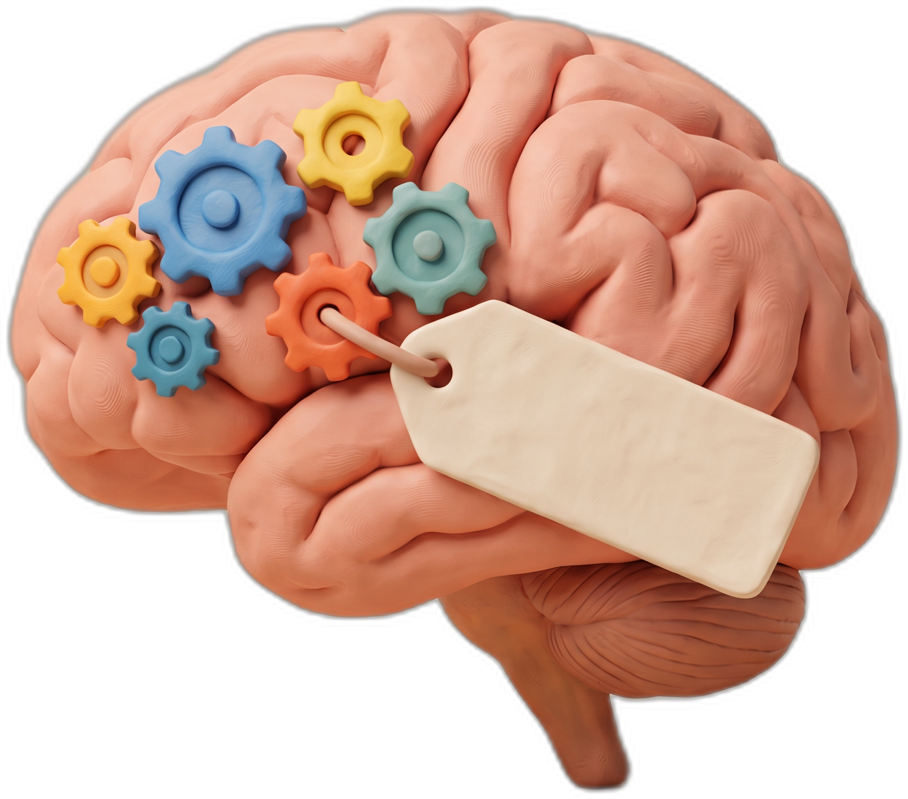
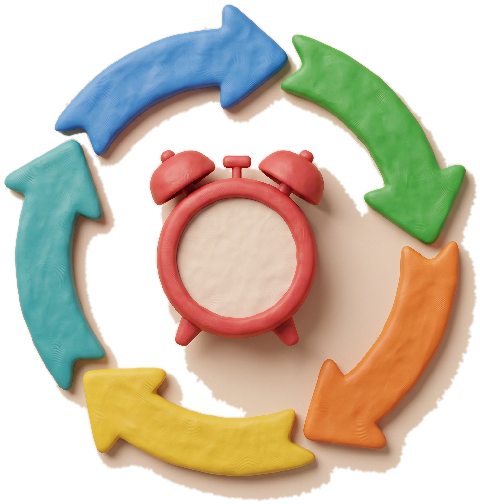
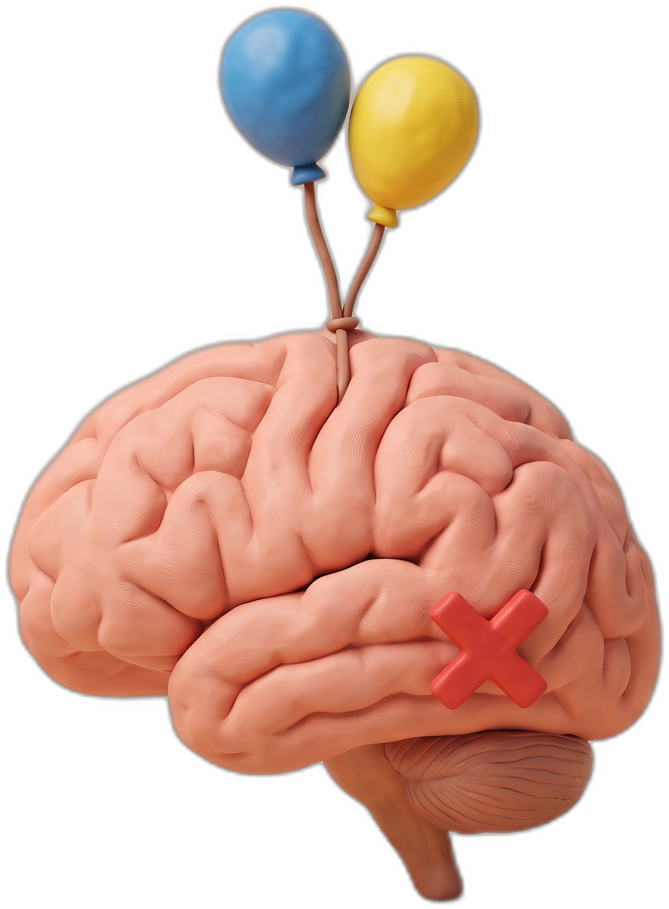

ADHS im Gehirn: Kein Willensproblem, sondern ein Steuerungsproblem
Die Steuerung im Gehirn Die Steuerung im Gehirn

Steuerzentrale
Typische Paradoxe im Alltag Typische Paradoxe im Alltag
Steuerzentrale: präfrontaler Cortex
Fünf Aufgaben: Planen · Arbeitsgedächtnis · Ablenkung ausblenden · Impulse bremsen · Langfristige Ziele. Bei reizarmen Aufgaben weniger stabil.
Die Lücke zwischen Wissen und Tun
„Ich sollte …“ → „Ich mache es jetzt.“Ich weiß es und schaffe es trotzdem nicht anzufangen.
Die wichtige E-Mail (5 Minuten Arbeit) bleibt eine Stunde liegen. Beim Lieblingsthema: stundenlanger Hyperfokus.Dasselbe Gehirn, andere Aktivierung.

Aufschieben
Deadline naht
Stress
Arbeitsphase
Erleichterung

Der Bewerter: Dopamin & Noradrenalin
Fragt ständig: „Lohnt sich das jetzt?“ Nicht einfach „zu wenig Dopamin“, sondern veränderte Signalwege. Wichtig finden ≠ jetzt Motivation aufbringen.
Was die Aktivierung einschaltet
Neuheit · Unmittelbare Konsequenzen · Persönliches Interesse · Zeitdruck. Aufmerksamkeit haben: ja. Aufmerksamkeit steuern: schwierig.
ADHS heißt nicht „keine Aufmerksamkeit“. Es heißt: Aufmerksamkeit, Motivation und Verhalten zuverlässig an das anzupassen, was gerade nötig ist, fällt schwer.
Quelle: NeuroWissen TV, „NEUROLOGE ERKLÄRT: Das macht ADHS wirklich in deinem Gehirn“ (2026) · Die Diagnose gehört zu Fachleuten.